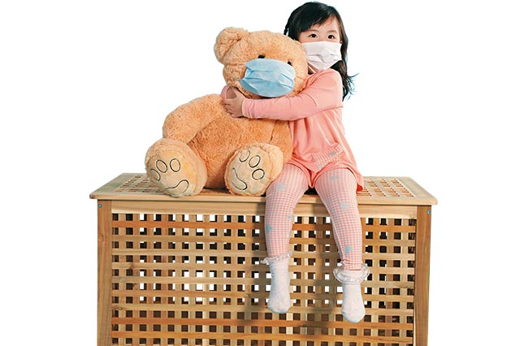

守護家人的呼吸
做對2件事，迎戰空氣污染
文章出處：親子天下雜誌66期
作者：記者 李宇欣
2015年年初，紀錄片《穹頂之下》引爆各界對於空氣汙染的廣泛討論。面對這個嚴 重影響健康的慢性殺手，父母、師長如何為孩子觀察空氣品質？可以有哪些因應對策？
大陸前央視主播柴靜所製作的紀錄片《穹頂之下》，以一位母親的心情，關心霧霾
如何傷害孩子的身體健康，紀錄片上線不到二十四小時，獲得破億人次點閱，引爆了長期
被人們忽略的重要議題：空汙。
台灣與大陸具地緣關係，使得大陸空汙問題也影響台灣甚深；尤其令家長不安的是，空汙
對兒童的危害，比成人更嚴重。台灣兒童過敏氣喘免疫及風溼病醫學會理事長，也是林口
長庚醫院兒童過敏氣喘風溼科主任葉國偉便指出，兒童體型小，呼吸速度比成人快，當大
人、小孩同處空汙環境，兒童吸入量比成人更多，對健康的威脅更大。
兩關鍵指標，掌握空汙嚴重度
這一波的空汙議題，有兩個關鍵字值得關心全家健康的你認識與留意（見七○頁小辭典
）：PM二．五（細懸浮微粒），以及PSI（即時空氣汙染指標值）。
PM（particulate matter）是懸浮在空氣中的粒狀物，粒徑小於或等於二．五微米（μm），
就稱為PM二．五。因為體積細小（不到人頭髮粗細的二十八分之一）、鼻腔無法隔離阻絕
，會直接被人體吸入呼吸道及肺部，進入血液通往全身，危害人體的神經、腸胃、心臟等
，更會引發氣喘、支氣管炎及癌症等嚴重疾病。
PSI（Pollutant Standard Index）則包括空氣中懸浮微粒、二氧化硫、二氧化氮、一氧化碳、
臭氧濃度等對人體有負面影響的最大值。
面對無所不在的空汙，國內已有關注環境的組織團體，展開實際的環保行動。
地球公民基金會在二○一二年開始推動「一百天庶民拍攝計畫」，鼓勵大家持續一百天觀
察、記錄住家附近的空氣品質，一路推動空汙總量管制。近年與兩所高雄市國小合作「校
園空汙旗」活動，每天早上第一節上課前，老師與學生一起查行政院環境保護署「空氣品
質監測網」，當PSI指標大於一百，或PM二．五指標進入第四級時，就會在校園內升起紅
色空汙旗，提醒師生佩戴口罩、減少或停止戶外活動。
地球公民基金會副執行長王敏玲說，空汙不像感冒會立即發作，而是一點一滴侵蝕健康，
也讓民眾面對空汙問題時，態度傾向消極、冷感。校園空汙旗活動推行後，直接喚醒老師
、學生及附近里民的環保意識，也讓高雄周邊工廠有所警覺，的確達到嚇阻作用。但她也
指出，這個民眾自覺的環保意識必須向外推廣，唯有影響政府制訂政策，才能有效降低國
內工業汙染，提高空氣品質。
除了戶外空氣汙染會直接影響孩童健康，還有另一個經常被忽略、又特別嚴重的隱形地雷
：室內居住環境。
家中「菸害」影響等同霧霾
長期進行國內空氣品質調查，現任台大醫院內科部及心血管中心主治醫師蘇大成發現，如
果家庭成員有抽菸習慣，或是住家附近廟宇、燒烤店林立，室內的空氣品質恐怕會比戶外
更糟。
國民健康署提醒，根據國際《菸草控制（Tobacco Control）》期刊於二○一四年研究顯示，
抽菸是日常生活中最常見的空汙來源之一，吸菸者家中的PM二．五濃度，是非吸菸家庭的
十倍。非吸菸者終身與吸菸者同住，等於長期暴露在霧霾嚴重的城市中。
父母吸菸，不僅會增加下一代罹患肺癌的風險，也增加孩子罹患中耳炎、氣喘、肺炎等的
機率；尤其有過敏兒的家庭，孩子長期暴露在二手菸環境中，會加重過敏反應、誘發氣喘
。遺憾的是，近年政府雖屢次調漲「菸品健康福利捐」、推動免費戒菸門診，根據國民健
康署最近一次調查結果指出，依然有近半數青少年與吸菸者同住、長期暴露在二手菸的環
境之中。
不僅二手菸，菸熄滅後在環境中殘留的汙染物「三手菸」，同樣影響健康。如三手菸中的
細懸浮微粒，會附著在家中的桌椅、地毯、牆壁、衣櫥等各種家具上，可能會影響孩童的
神經發展及認知能力。
雖然三手菸對健康的殺傷力不亞於二手菸，但是根據董氏基金會調查，高達九成民眾認同
二手菸危害孩童健康，但只有六成的民眾了解「三手菸」也直接影響孩童健康，成為居家
環境的隱形地雷。
葉國偉認為，減少室內居住環境的空氣汙染，最快速有效的方法就是戒菸。但若家庭吸菸
成員無法一夕戒掉，最好定期清洗家具，並減少使用地毯、窗簾等厚重、容易吸附汙染物
材質的家具。此外，許多家庭有拜拜燒香、燒紙錢的習慣，由於香和紙錢燃燒後會釋放高
毒性的苯，人體處在煙霧繚繞的密閉空間中，不到兩小時就有致癌危機。但拜拜是傳統民
間習俗，如果實在無法拒絕使用香或紙錢，也建議透過適度減量，或選擇在通風良好的環
境下燃燒，避免吸入過多的苯。
家長是替孩子守護健康的第一道防線。為了孩子的健康，我們除了隨時留意空氣品質，甚
至盡公民義務關注空汙問題外，也應重新檢視居家環境，營造一個健康且舒適的室內空間
。
三行動，告別髒空氣
1.留意每日空氣品質
每天出門前可搜尋行政院環保署「空氣品質監測網」，政府會隨時更新各地空氣品質狀況
，並給予「安心外出、減少外出、長者及幼童不建議外出」等實際建議。
2.選擇有效口罩
面對短時間無法解決的空汙問題，「口罩」是照護呼吸道的重要工具。針對市面常見的口
罩，葉國偉及蘇大成坦言，N95口罩的防護效果最好，但一般人根本戴不住，不到半小時
就會缺氧；棉質布口罩雖可重複使用，但隔絕效果不足，且建議每天都應透過清洗、日晒
來殺菌；拋棄式醫用口罩是一般民眾外出最佳選擇，建議每日換新。
3.回家清洗臉口鼻
為減少空氣汙染物殘留體內，從外面回家必須先做3件事：洗臉、漱口、清鼻腔。
以溫水洗臉，可將附著在臉部皮膚的髒東西清除；透過刷牙、漱口清理口腔髒汙；用沾水
或生理食鹽水的棉花棒清潔鼻腔。以上3個步驟，都可有效減少髒汙進入體內。
★PSI：空氣品質對於身體的影響
空氣污染指標對健康的影響 狀態色塊 健康影響
0～50良好對健康無影響
51～100普通 對敏感族群健康無立即影響
101～199不良敏感族群會輕微症狀惡化
200～299非常不良敏感族群症狀明顯惡化；一般民眾可能會不適
>=300 有害 敏感族群症狀顯著惡化；一般民眾運動能力下降
★PM2.5：是否適合戶外活動的依據
(μg/m3g) 活動建議
1低0～11一般民眾、敏感族群可正常戶外活動
2低12～23
3低24～35
4中 36～41一般民眾可正常戶外活動；敏感族群減少戶外活動
5中42～47
6中48～53
7 54～58一般民眾、敏感族群減少戶外活動
8高59～64
9高 65～70
10 非常高＞71一般民眾減少戶外活動；敏感族群避免戶外活動
★敏感族群：有心臟、呼吸道及心血管疾病的成人與孩童。